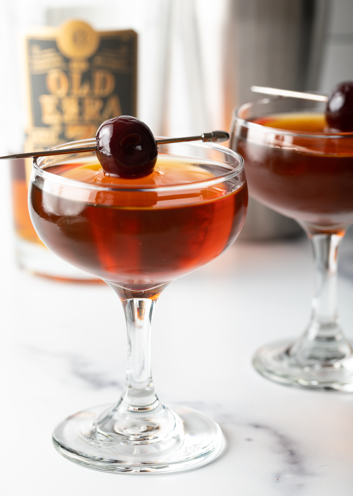

Manhattan Cocktail Recipe

Description
The Manhattan was the most famous cocktail in the world shortly after it was invented in New York City's Manhattan Club,
some time around 1880 (as the story goes). Over the years,
the whiskey classic has dipped in and out of fashion before finding its footing as one of the cornerstones of the craft cocktail renaissance.
Ingredients
- 2 ounces rye whiskey
- 1 ounce sweet vermouth
- 2 dashes Angostura bitters
- Garnish: brandied cherry (or lemon twist, if preferred)
Steps
- Add the rye whiskey, sweet vermouth, and bitters into a mixing glass with ice and stir until well-chilled.
- Strain into a chilled Nick & Nora or coupe glass.
- Garnish with a brandied cherry (or a lemon twist, if preferred).
Back